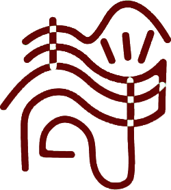

姓名：冉静仟
出生年月:1998.03.08
年龄：21
民族：汉
政治面貌：共青团员
应聘：平面设计师，网页设计
籍贯：河北省保定市满城区
联系电话:15931279577(同微信)
qq邮箱：3170680156@qq.com

- 教育背景
- 2017.09-2020.06 保定职业技术学院 传媒艺术系广告设计与制作 专科
- 主修课程：手绘，Ps，Ai，Dw，Pr， Ae；
- 获得荣誉
- 2018—2019年连续两年参加全院排球赛并获得第六名
- 2018年院学生会获得“优秀干事”称号
- 2018年第十六届学院奖秋季赛广告文案荣获佳作奖；
- 2018年第十六届学院奖秋季赛广告策划荣获佳作奖；
- 2019年获得“优秀团员”称号；
- 工作经历
- 2017.09-2019.06 在学院勤工俭学任职
- 2019.04-2019.06 天津肯德基有限公司兼职
- 技能证书
- 全国普通话考试二级甲等证书
- 大学生创业资格证书
- 自我评价
- 我热爱运动，喜欢旅游，性格开朗乐观，热情友好，能吃苦耐劳，学习潜力强。三年的校园学习生活经历使我积累了较强的组织协调沟通潜力和团队合作精神，具有较强的职责心。应对校外的实习机会我会努力认真的工作，积累更多的相关工作经验，能够在实习期间在处理问题时能够取得重大的提升，使自己更成熟。对事物有敏锐的洞察力，多次的社会实践经历及在学生会工作期间锻炼了我与人沟通合作的潜力以及独立潜力，做事认真负责。 “踏实做事，诚实做人”是我为人处世的原则。


回首过去
我们思绪纷飞
立足今日
我们胸有成竹
展望未来
我们引吭高歌
谢谢观赏！！！